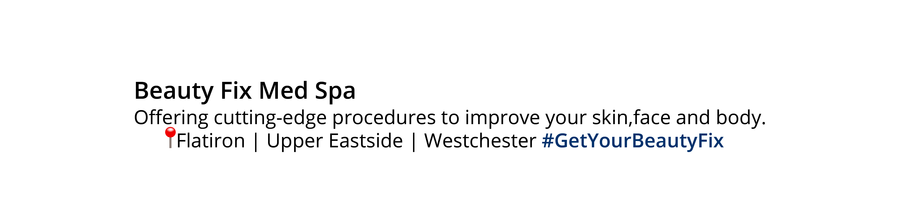
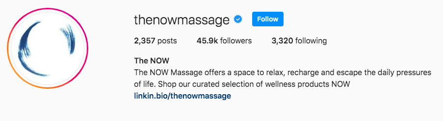
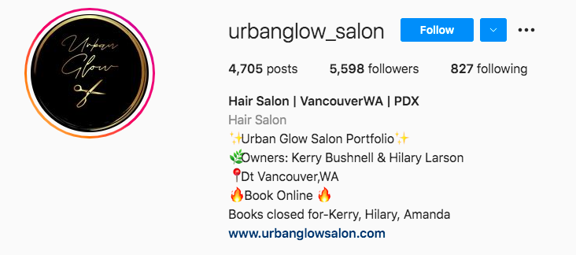

Getting Started
With over 61% of social media posts discussing wellness being visual, Instagram is a key platform to utilize, and leads the pack in terms of the volume of health and wellness focused posts.
Best Practices
- Include convenient call to action buttons, which visitors and followers can tap to make contact or do business with you. These can be added to your profile.
- Post content, particularly Stories, often - 2-3 x per week is a great place to start, just make sure all content is on brand and relevant to your audience.
- Feed content should look curated and be aesthetically pleasing both as standalone content, and when seen together on the grid (your profile).
- Check your DMs regularly for any customer inquiries or to collaborate with relevant influencers.
- Respond to any questions or comments on your feed promptly.
-
Create a branded or personalized hashtag (#) - for example
BeautyFix Med Spa (shown below) uses #GetYourBeautyFix and
encourages anyone talking about their salon to use this # so
that they can track it and see relevant posts.

-
Utilize the Stories option to show more live and ‘in the moment’
style video and image content (more on this in our Social Media
Content Creation and Curation module!). These Stories can be
highlighted and categorized on your profile to make it easy to
see different aspects of your offering. For example,
The NOW massage
boutique
has used a branded cover on each:

- Your Insights page, which you can access through your profile, offers a detailed view of how content is performing. Insights for Stories are available for up to 14 days after Stories appear. This can help you better understand if your content is reaching the right audience and how they are engaging.
- Build up your Instagram following and community by following relevant accounts. For example, other medspas or salons, or the people who are following them, and beauty and wellness influencers that align with your brand.
Profile Set Up
Facebook and Instagram are both owned by the same company, and therefore can be linked and integrated to make managing your social media easier. Instagram is best, and most commonly, used on mobile, so the following steps are intended to be completed on mobile as well.
-
Download the Instagram App
The app is available for free from the App Store or Google Play Store.
-
Set Up or Create a New Account
Use your business email address to set up your account. Alternatively, you can select “Login with Facebook’ to link your Instagram account from the start.
-
Create a Username
Create a username that is either the name of your business, or an identifiable phrase that would be used to search for your business. This should be the same or standardized across platforms.
-
Profile Picture
Similar to Facebook, Instagram crops your profile picture into a circle. It is recommended to use your logo as your profile picture, or a photo that includes your brand name. The dimensions for Instagram are 320 x 320 pixels.
-
About/Information
Instagram profiles include a short bio section (150 words or less) where you can add information about your business and what you do. This should be very short and snappy, and where appropriate use emojis to break up text.
See examples from The NOW massage boutique and Urban Glow Hair Salon:
 -
Links
Add a link to your website, a direct booking link, or any online location you wish your Instagram audience to visit. You can change this at any time if you have any campaigns running where you want to link to a different location.